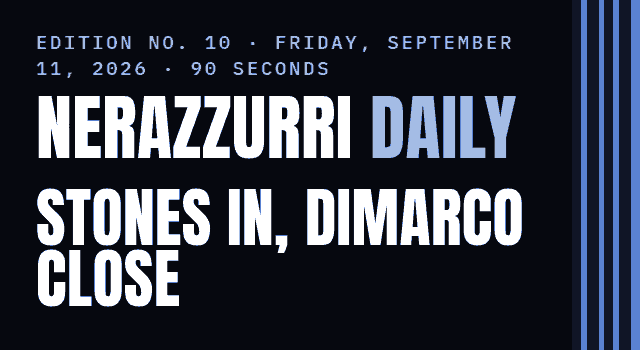

Chivu had the squad back on the field at Appiano Gentile on Thursday morning, three days out from Udinese at San Siro on Monday night. Gazzetta dello Sport reports a rebuilt back line for that match, and Sky Sport has Federico Dimarco, who missed the Bernabéu, close to full training. The club itself has said nothing about Monday's team — but it did tie two more women's players to 2029.
| TODAY No match SERIE A · 2ND · 9 POINTS FROM 3 |
| LAST Real Madrid 2–1 Inter CARLOS AUGUSTO 77' · CHAMPIONS LEAGUE |
| NEXT Udinese HOME MON 2:45 PM ET · 20:45 CEST |
Inter announced on Friday morning that Elisa Polli, the forward born in 2000, will be at the club until June 30, 2029. A day earlier the club extended defender Chiara Robustellini, born in 2003, to the same date.
The Serie A Women season opens on the weekend of September 26 and 27, at home against Fiorentina.
INTER.IT · SEP 10-11
The squad trained on Thursday morning at Appiano Gentile under Chivu and his staff, the first session the club has reported since the Bernabéu. Udinese come to San Siro on Monday, September 14 at 2:45 PM ET (20:45 CEST).
Inter have published no lineup and no injury list. Everything below about Monday's team is press.
INTER.IT · SEP 10
Gazzetta dello Sport reports that John Stones will start at the center of the defense against Udinese on the strength of his second half at the Bernabéu, with Manuel Akanji shifting to right back in place of Yann Bisseck and Alessandro Bastoni on the left.
The paper's case is the Madrid numbers: 23 completed passes out of 23, one foul, and four aerial duels, more than any other Inter player on the night, two of them won. Inter have conceded five goals in four matches this season.
GAZZETTA DELLO SPORT VIA FCINTERNEWS · SEP 10
Sky Sport, carried by FCInter1908, reports that Dimarco worked on the field at high intensity on Thursday and should rejoin full group training between Friday and Saturday, which would put him in contention for Monday. He sat out the Real Madrid match.
The same report has Francesco Pio Esposito back in the starting lineup against Udinese.
SKY SPORT VIA FCINTER1908 · SEP 10
Scorers and minutes are the club's own match report.
SERIE A FORM W W W · THREE FROM THREE · NINE POINTS · MBAPPÉ 14, VALVERDE 23, CARLOS AUGUSTO 77
| Udinese HOME MON, SEP 14 · SERIE A · MATCHDAY 4 2:45 PM ET · 20:45 CEST · US TV: PARAMOUNT+ |
| Roma AWAY SAT, SEP 19 · SERIE A · MATCHDAY 5 12:00 PM ET · 18:00 CEST · US TV: PARAMOUNT+ |
| Parma HOME SAT, OCT 10 · SERIE A · MATCHDAY 6 12:00 PM ET · 18:00 CEST · US TV: PARAMOUNT+ |
| Club Brugge HOME TUE, OCT 13 · CHAMPIONS LEAGUE 3:00 PM ET · 21:00 CEST · US TV: NOT YET PUBLISHED |
| Bologna AWAY SAT, OCT 17 · SERIE A · MATCHDAY 7 12:00 PM ET · 18:00 CEST · US TV: PARAMOUNT+ |
Times are the club's and the league's. US listings come from World Soccer Talk's published Serie A schedule, which does not carry the Champions League.
YOUR CALL FOR FRIDAY · Gazzetta has Stones in the middle on Monday. One tap.
Reply to this email and tell me where you're reading from, and how Inter got you. I read every one. And if you know one Inter fan who'd want this, forward it to them — that's how this grows.
NEXT EDITION: SATURDAY, SEPTEMBER 12 — WHETHER DIMARCO TRAINS WITH THE GROUP